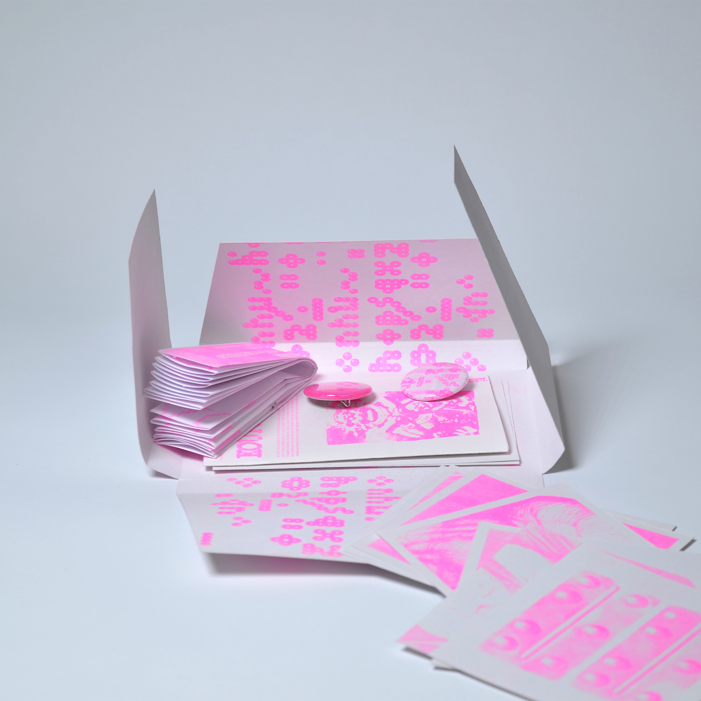

magazine du futur
2026 ÉditionCréation en trio d'une revue du futur imprimée en monochromie en risographie.
Nous avons imaginé une nouvelle manière de s'informer sous forme de "boîte d'information" comportant différents éléments (articles, "scroll" papier, images absurdes...). S'inscrivant dans une société où l'accès aux vraies informations se fait de plus en plus difficile, l'esthétique futuriste avec des langages codés, des bugs et des anomalies reflète une boucle numérique n'ayant plus aucun sens.
